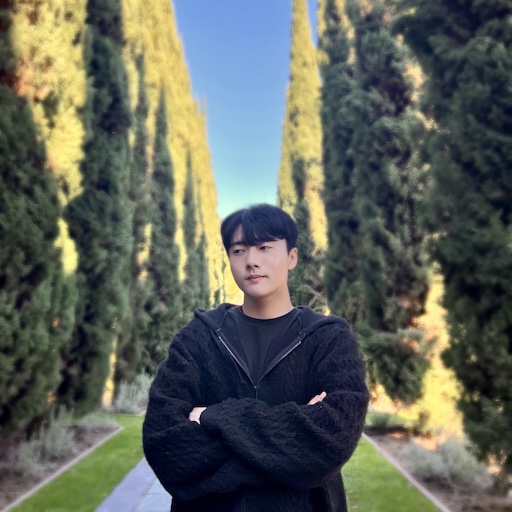

|
Minhyuk An I'm currently a master's student in the department of Artificial Intelligence at Yonsei University. I am working at the Soft Computing Laboratory (SCLab) and am fortunate to be advised by SungBae Cho.
Email: als7928@yonsei.ac.kr |
 |
{kind=link}
ResearchI have a keen interest in AI/ML as a whole with data of any kind—images, text, audio, graphs, and more! Particularly, I am deeply fascinated by gaining a deeper understanding of data for real-world applications. |

|
Prompt Optimization for Large Language Models with Generalized
Feedback via Semantic Centrality
Minhyuk An, Tae-hoon Kang, Haerin Byeon, Sung-Bae Cho Preprint, ACL 2025 (under review) Paper / Code AI Agents / Large Language Models / Prompt Optimization / Black-box Optimization / Dialogue & Interactive Systems / Monte Carlo Tree Search |

|
Local-Global Blending Graph Neural ODE Network for Graph Classification
Minhyuk An, Sung-Bae Cho Preprint, IJCAI 2025 (under review) Paper / Code Graph Neural Network / Graph Mining / Neural Ordinary Differential Equations |
Undergraduate Projects |

|
Samsung AI Challenge : Camera-Invariant Domain Adaptation
Team Competition (ranked 30th place), 2023 Code Developed a semi-supervised semantic segmentation method for predicting distorted target images Domain Adaptation / Domain Adaptive Semantic Segmentation / Semi-Supervised Learning / Adaptive Cutmix |
|
|
Latent Diffusion for Crowd Counting
Gihun Son, Minhyuk An, Siwon Lee Bachelor's thesis, 2023 Paper / Poster / Code Developed an latent diffusion based crowd counting system with only RGB images Crowd Counting / Diffusion Models |

|
Applying Bag of Tricks for Improving Accuracy
Personal Project, 2023 Report / Code Conducted experiments by applying various methods to enhance CNN performance introduced in Bag of Tricks paper Knowledge Distillation / Learning Rate Scheduling / Label Smoothing / Mixup Augmentation / ResNet / CUB200 |

|
3D Object Detection for Self-Driving Cars
Team Project, 2022 Competition Demo / Code / Note Developed a real-time deep learning-based 3d object detection system with a camera and Lidar 3D Object Detection / Sensor Fusion / Calibration / ROS / Custom Datasets |

|
Random Speech Classification for Gender and Person Identification
Team Project, 2021 Report Developed a system that classifies voice pitch ranges based on the fundamental frequency of human voices in the frequency domain Audio Analysis / Digital Signal Processing / K-means Clustering |
Research Projects
|
Patent
|
Education
|
Achievements & Experience
|
Coursework
Graduate:
Advanced Video Processing / Advanced Data Mining / Multicore Programming Fundamentals / Information Theory / Multimodal Deep Learning / Graph and Network Analysis / Lightweight Networks / etc.
|
|
The finest template from Jon Barron |